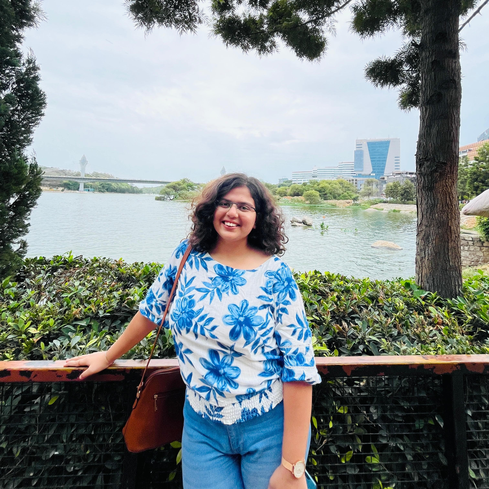

|
Ananya Vivek Kulkarni I'm an AI/ML researcher at iHub-Data, IIIT Hyderabad, where I work on computer vision, 3D understanding, and knowledge distillation for adverse weather removal. Previously, I worked at SAC, ISRO on radiative transfer emulation and at DIAT, DRDO on deep learning for leak detection. I received my B.Tech from Dharmsinh Desai University. I've received a Best Paper Award (Springer CCIS, 2023), have publications in OTCON 2025, and upcoming papers at ERCICAM 2025 and ICVGIP 2025, as well as a patent on real-time Braille conversion. |
 |
ResearchI'm interested in computer vision, deep learning, model compression, and robust image understanding. Most of my research focuses on improving visual perception in challenging environments through adverse weather removal, monocular 3D reconstruction, and efficient models via knowledge distillation. Recently, I've been working with 3D Gaussian Splatting, depth estimation, and semantic-guided enhancement frameworks. Some papers are highlighted. |
|
|||
|
|||
|
|||
|
|||
|
|||


{kind=link}
Miscellanea |
Honors |
Best Paper Award, ASCIS 2023 (Springer CCIS) Student Startup Innovation Policy (SSIP), Govt. of Gujarat (funded student project) Top-10 Finalist, DevHeat Beta Hackathon (student category) |
Presentations |
Paper presentation at ERCICAM 2025 (rule-based parsing for Indo-Aryan languages) Conference presentation at OTCON 2025 (vehicle visibility in foggy environments) Best Paper presentation at ASCIS 2023 |
Patents |
A System and Method for Real-Time Text-to-Braille Converter Indian Patent Application No. 202421066714, published Dec 2024 |
Beyond Research |
Classical Bharatanatyam dancer (trained for 3 years, distinction) Contributor to open-source climate ML projects (OpenClimateFix) Interested in edge AI systems, low-visibility perception, and 3D scene understanding |
|
Website adapted from an open-source academic template by Jon Barron. Content © Ananya Vivek Kulkarni. |